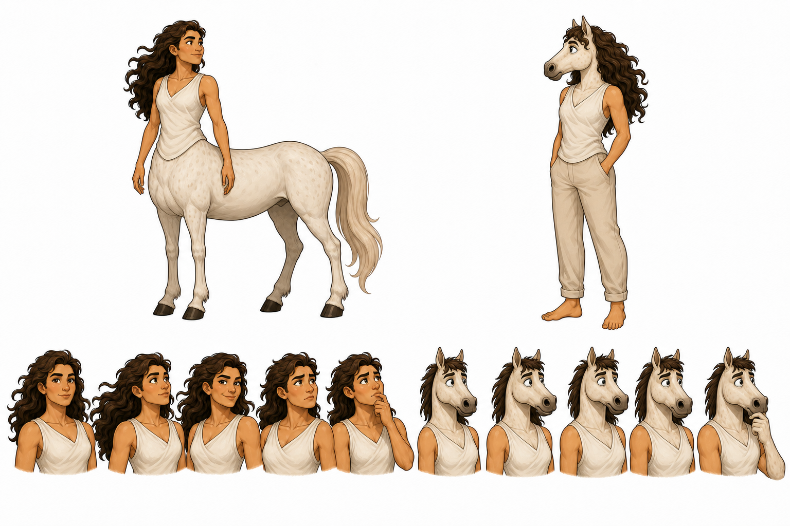
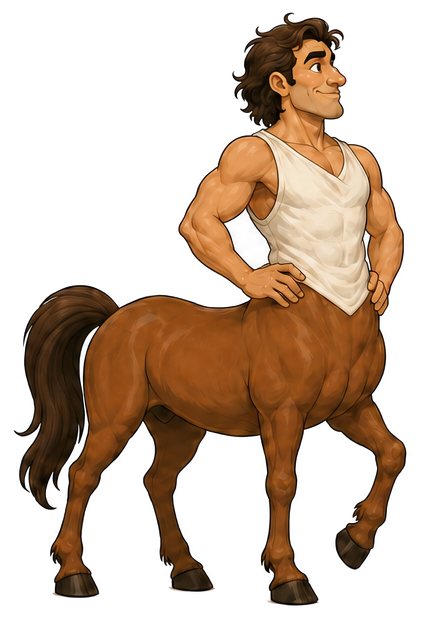
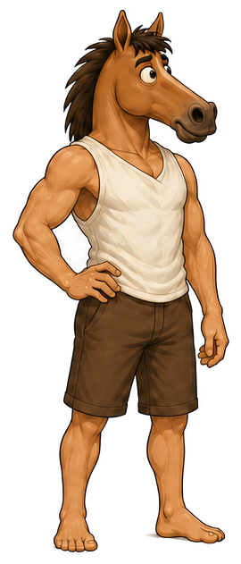
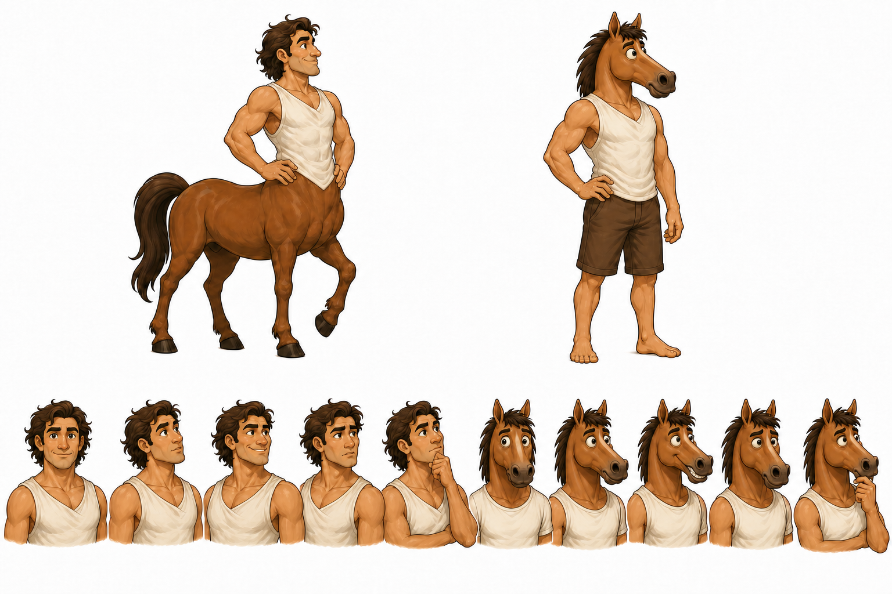
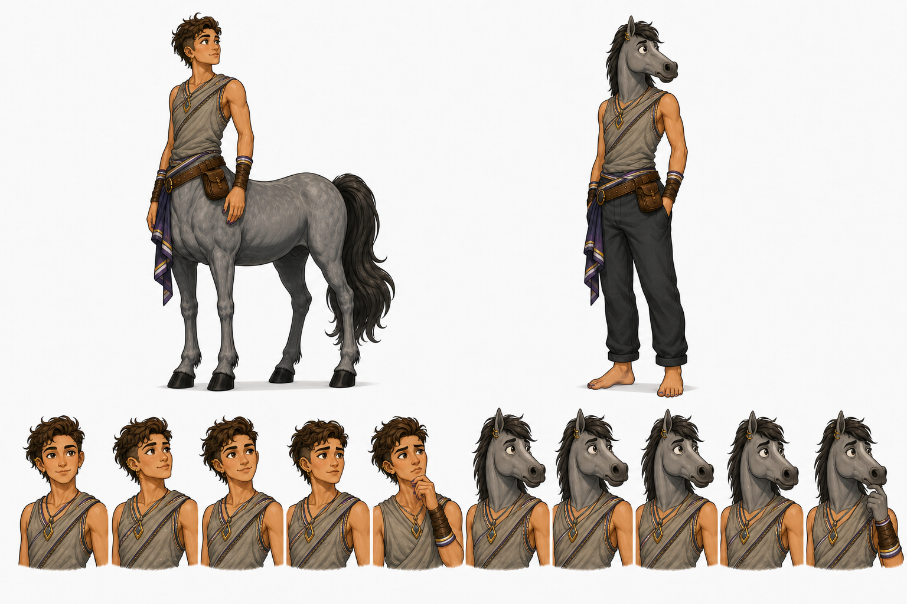
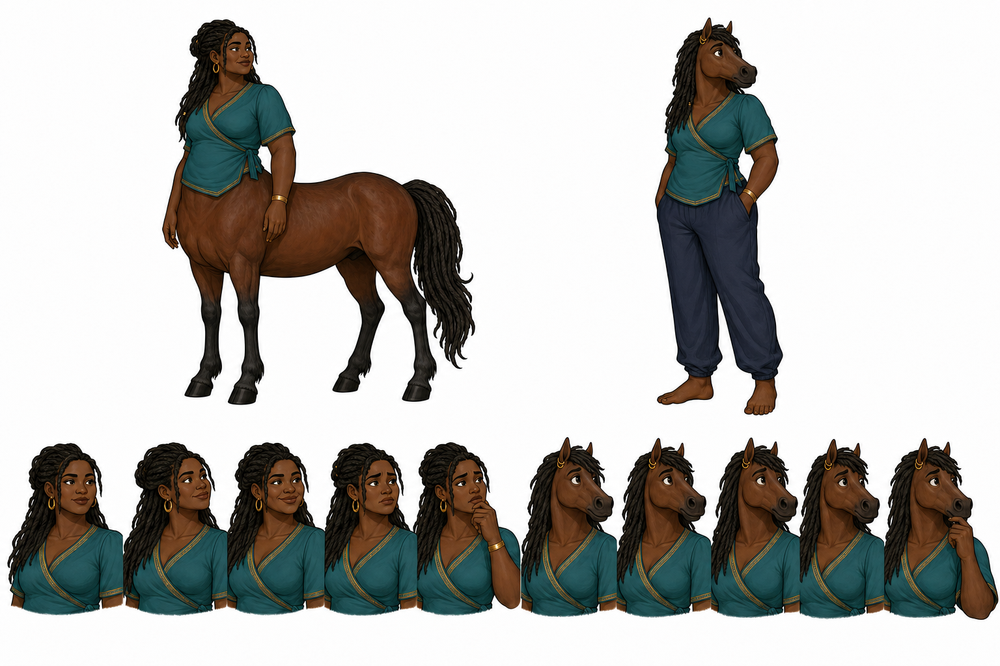
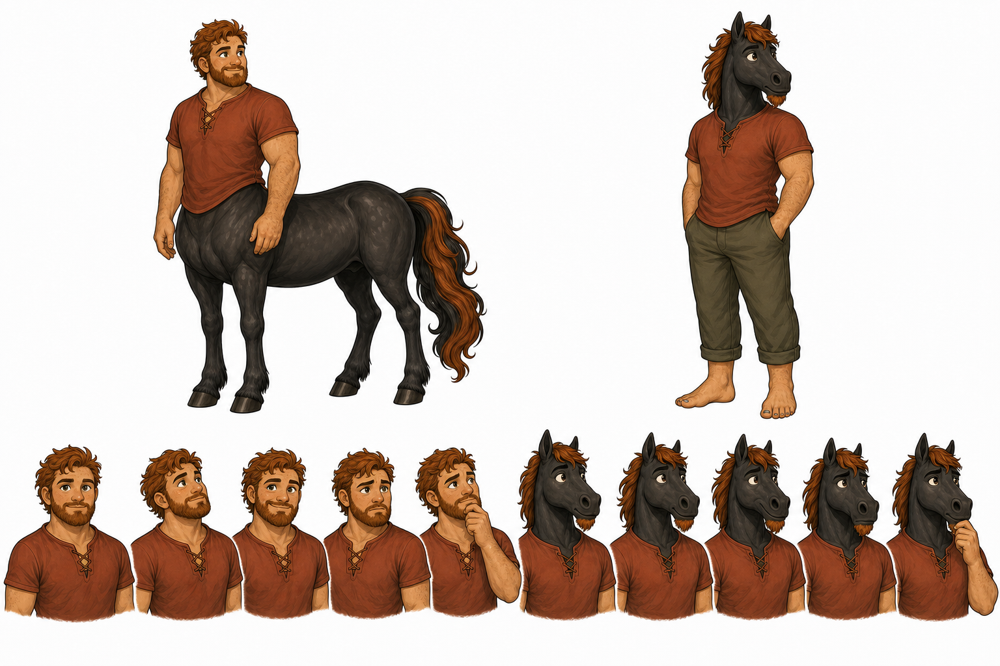
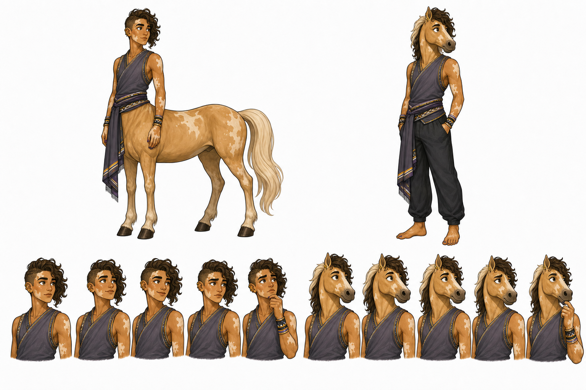
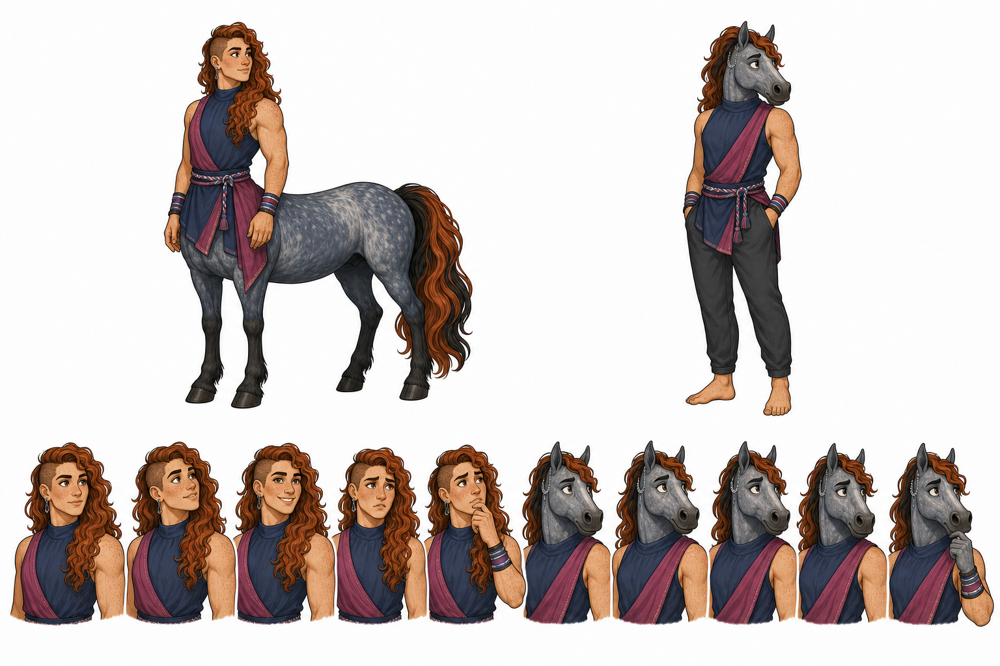

CelesteJourney cartographerStrength · awareness · agency
Which form is shaping this moment?
The centaur represents a person centred in their strengths and able to act positively in the world. The reverse-centaur appears when pressure and weakness consume their attention—and the world begins deciding who they are.
Explore Mateo’s agency lens
Strength-centred

Weakness-centred

The premise
Awareness is the first act of agency.
01 · NoticeI am reacting from pressure.
02 · NameWhat has captured my attention?
03 · CentreWhich strength is still available?
04 · ActWhat is one positive next step?
Seven people · fourteen forms
Meet the cast
Each character has their own strengths, shadows, social place, tools, and recognizable path back to positive action.

MateoPathfinder · dossier available
AriConstructive skeptic
ImaniCommunity hearthkeeper
BramPractical builder
NoorPattern-reader
RowanLearning and response lead